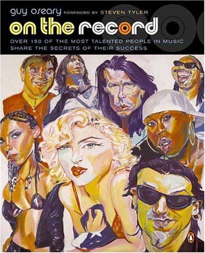
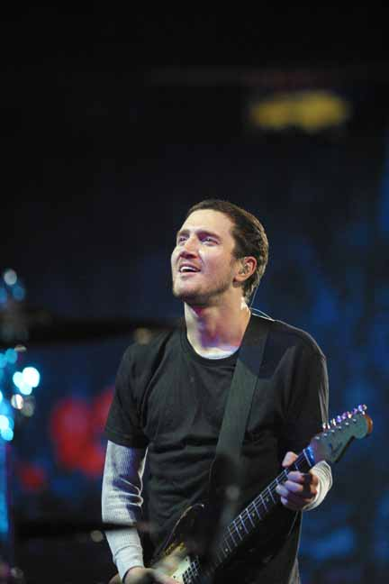
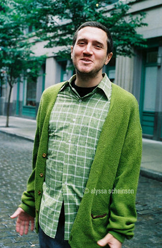
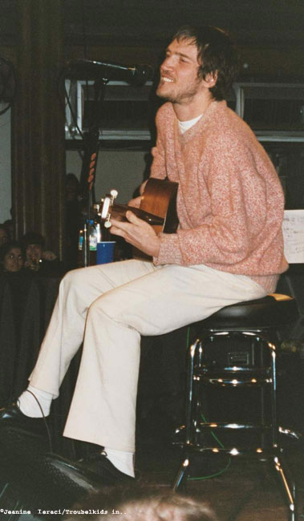

Przetłumaczyła Wanda
Wywiad z książki „On the Record: Over 150 of the most talented people in music shares secrets of their success. Autor: Guy Oseary (2004)
Z miłości do muzyki

Książka Guy`a Oseary`ego to zbiór wywiadów z ponad 150 słynnymi muzykami, piosenkarzami, kompozytorami. Opowiadają o swojej drodze do sukcesu, blaskach i cieniach muzycznego biznesu, inspiracjach, codziennej pracy. Wśród odpytywanych znalazł się także John Frusciante. Jak doszło do tego, że postanowił zostać gitarzystą? Kto pierwszy doceniał jego talent i rozumiał jego aspiracje? Czyje plakaty zdobiły jego ściany, gdy był dzieckiem i nastolatkiem? Co robił by zrealizować swoje życiowe plany?
Z tego wywiadu możemy dowiedzieć się, że potrafi być bardzo wymagający zarówno wobec siebie, jak i wobec innych muzyków – docenia tych, którzy potrafią ciężko pracować i robią to z miłości do muzyki, a nie w pogoni za sławą i pieniędzmi. Bardzo inspirująca i eklektyczna jest lista ulubionych albumów i piosenek Johna Frusciante – wspomina też w tym wywiadzie o kilku ze swoich ulubionych artystów, podkreślając, że muzyczni idole potrafią być niezwykle ważni w naszym życiu. Zdradza też że dopiero zrozumienie pewnych mechanizmów związanych ze sposobem myślenia fanów pomogło mu uporać się z rolą popularnego muzyka.
Recepta Johna Frusciante na sukces wydaje się bardzo prosta, ale jednocześnie jest bardzo trudna do realizacji. Jeśli liczymy na sławę i kasę możemy ich nie zdobyć, jeśli najważniejsza jest dla nas muzyka i satysfakcja z jej tworzenia wygrywamy niezależnie od stanu konta.
Czy miałeś jakiegoś mentora lub kogoś, kto Cię inspirował? Jeśli tak, czego się nauczyłeś od tej osoby?
Mój ojczym, Larry, był naprawdę wspaniałą osobą do tego, by dorastać w jego towarzystwie. Każdy dzień w szkole przynosił nową awanturę – z dzieciakami, z nauczycielami. Z dziećmi – bo śmiały się z rzeczy które lubiłem, a one nigdy o nich nie słyszały, takich jak King Crimson. Z nauczycielami, bo na przykład nie pozwalali mi przygotować recenzji „Antychrysta” Nietzsche`go. Rozmawiałem o tym z Larrym po powrocie do domu ze szkoły i on zawsze przyznawał mi rację. W jego osobie miałem kogoś, kto we mnie wierzył. To bardzo wiele znaczy dla dziecka, by mieć dorosłego, który w Ciebie wierzy i który dostrzega w Tobie cos wartościowego.
Pamiętam z gimnazjum nauczyciela o nazwisku Huges.
Do jego obowiązków należało pilnowanie uczniów zostających za karę po lekcjach i dzieci albo go kochały, albo nienawidziły.
Był bardzo zabawny, ale równocześnie bardzo wymagający. Gdy się go lepiej poznało, można było dostrzec, że nawet ta jego surowość jest śmieszna. Gdy byłem w ósmej klasie, poprosił najładniejszą dziewczynę, by poszła i przyprowadziła mnie z innych zajęć do niego – zwykle gdy robił coś podobnego oznaczało to, że masz kłopoty. Kiedy wszedłem do jego gabinetu powiedział: „John chcę, żebyś usiadł i napisał list przedstawiający twoją opinię o mnie jako o nauczycielu i żebyś go podpisał. Kiedy będziesz sławny, będę go mógł pokazać moim uczniom.” To sprawiło, że poczułem się wspaniale. Zawsze wiedziałem, że będę muzykiem, ale nikt mi nie wierzył. Może inne dzieci wierzyły, gdy słyszały jak gram, ale na pewno jeszcze nie wtedy. Pan Huges powiedział tak wyłącznie na podstawie mojego podejścia do muzyki i tego, co dostrzegł w moich oczach. Bardzo to doceniłem.
Kiedy byłem nastolatkiem, poświęciłem się całkowicie studiowaniu muzyki Franka Zappy. Myślałem o nim jako o doskonałej istocie ludzkiej, która mówi i robi wyłącznie dobre rzeczy. Wiedziałem, że chcę być najlepszym gitarzystą jakim mogę być. I uczyłem się bardzo trudnej muzyki, którą skomponował Zappa. Wyobrażałem sobie, że stoi naprzeciwko mnie i wybija takt, a ja gram na takim poziomie technicznym, jakiego wydawało mi się oczekuje od swoich muzyków. Wpływał na mnie kojąco, gdy miałem piętnaście czy szesnaście lat i gdy ćwiczyłem więcej niż kiedykolwiek. Jeśli dorastając doznajesz bólu czy zagubienia, dobrze mieć osobę, która sprawia, że się uśmiechasz. Gdy nie masz kogoś takiego, zostajesz sam ze swoim smutkiem i cierpieniem. Zawsze miałem takich ludzi. Kilka lat temu byli to Martin 
Jak była Twoja pierwsza praca w branży muzycznej i jak ją zdobyłeś?
Miałem osiemnaście lat, gdy dołączyłem do zespołu. Wcześniej mieszkałem samodzielnie około roku, a mój ojciec płacił jakieś czterysta dolarów miesięcznie za moje lekcje muzyki. Chodziłem na nie przez pewien czas, potem udawałem, że chodzę i w końcu przestał dawać mi pieniądze. Wtedy dołączyłem do Chili Peppers.
Co było dla Ciebie pierwszym przełomowym momentem, pierwszą wspaniałą rzeczą, która Ci się przydarzyła?
Dołączenie do zespołu, który wtedy był moim ulubionym. Mam poczucie, że jestem niesamowitym szczęściarzem, że udało mi się wejść do branży muzycznej w taki sposób, dzięki przyjacielowi, którego poznałem, a który był już basistą w dość popularnym zespole. Nie spodziewałem się, że mogę kiedykolwiek osiągnąć większy sukces, niż odnosiło wówczas Chili Peppers, sprzedając siedemdziesiąt tysięcy płyt czy coś w tym rodzaju. Występowanie w Roxy lub Palace wydawało mi się szczytem sławy.
Kiedy naprawdę odnieśliśmy wielki sukces, było to dla mnie rozczarowanie, porażka. Gdy po raz ostatni byłem na koncercie Chili Peppers przed swoim dołączeniem do zespołu (na ostatnim występie Hillela w Palace) moja ówczesna dziewczyna, Sara, zapytała mnie czy lubiłbym nadal Chili Peppers, gdyby grali w Forum. Nie myślałem wówczas, że coś takiego jest kiedykolwiek możliwe. Gdyby tak się stało, nie byli by już dla mnie tym samym zespołem. Utracili by wszystko, za co ich lubiłem. Wtedy myśl o tym, że Chili Peppers mogłoby brzmieć tak, jak dziś brzmimy, wydawała się niewiarygodna. To byłaby ostatnia rzecz, której można byłoby chcieć dla zespołu – by wypadał dobrze na wielkich scenach.
Miałem wizję tego, co znaczy dla mnie zespół i w okresie Blood Sugar czułem, że depczemy tę wizję stając się tak popularni, jak się zaczynaliśmy stawać. Dostawałem szału z powodu przejścia z grania w klubach do grania w salach koncertowych – a to nie były nawet stadiony, to były sale z cztero- pięciotysięczną widownią. Z perspektywy mogę powiedzieć, że nie zdawałem sobie wtedy jeszcze sprawy, że jestem tym, za kogo uważają mnie ludzie. Nadal chciałem by myśleli, że jestem tym, za kogo sam się uważam. Dopuszczenie tego do swojej świadomości jest bardzo ważne. Ty i twoja muzyka możecie być tak różnie odbierani przez różnych ludzi i na swój sposób każdy z nich ma rację. Ich percepcja twojej osoby jest dla nich czymś realnym, wiec dlaczego miałbyś to kontrolować? Zdawałem sobie z tego sprawę na różnych etapach mojego życia, że moje wyobrażenia o różnych ludziach czyniły mnie szczęśliwym. Były znacznie ważniejsze niż to, kim oni faktycznie byli. Kiedy poznasz taką osobę, ten obraz może ulec zniszczeniu. Ale póki masz sam obraz, jest on znacznie bardziej magiczny i elastyczny. Jestem bardzo dumny, że mogę znaczyć tak wiele dla różnych osób.

Jakie elementy Twojej pracy sprawiają, że chcesz pracować każdego dnia?
Czuję, że jest jeszcze ogromne terytorium do muzycznego zagospodarowania. Czuje, że stajemy się coraz lepsi. Widzę, ze Flea staje się coraz lepszym muzykiem; widzę, ze Anthony coraz lepiej śpiewa i pisze coraz lepsze piosenki. Czuję, że w kontekście naszej grupy mam do zrobienia jeszcze wiele interesujących rzeczy. Gdyby tak nie było, gdybym miał poczucie, że się cofamy, nie chciałbym tego dłużej robić. Zamiast tego poszedłbym w kierunku który mnie interesuje, niezależnie od tego, czy jest czy nie jest komercyjny. Na szczęście teraz rzeczy, które mnie interesują, pozwalają mi także na dobre, wygodne życie.
Jakie cechy pozwoliły Ci osiągnąć to, czym możesz się dziś poszczycić?
Fakt, że robię to z całkowitej miłości do muzyki. Muzyka tak wiele razy uratowała mi życie. Jest moim najlepszym przyjacielem od dzieciństwa. To była jedyna rzecz na której mogłem polegać i która sprawiała, że życie zdawało się nie mieć końca. Od chwili, gdy miałem siedem lat, muzyka pozwoliła mi dostrzec wyraźnie, że wszystko jest nieskończone, że to przestrzeń, która jest wszystkim i niczym zarazem. To było dla mnie oczywiste dzięki słuchaniu Kiss.
Kiedy miałem dwanaście lat przenieśliśmy się do Doliny. Kiedy jesteś dzieciakiem, Dolina wydaje się być nudnym miejscem z bandą geeków, gdzie wszyscy są kujonami i nikt nie ma o niczym pojęcia. Tam rozwinąłem swoje całkowite oddanie muzyce i zapragnąłem, żeby stała się całym moim życiem. Musiałem się upewnić czy jestem w tym dobry, więc stałem się bardzo zdyscyplinowany. Wtedy jedyne co potrafiłem grać to był punk rock. Ale wiedziałem, że najpóźniej za 5 lat opuszczę Dolinę, więc stwierdziłem, że jeśli będę ćwiczyć tak dużo jak będę mógł, do czasu gdy się stamtąd wydostanę, będę dobrym gitarzystą. Stopniowo przeszedłem od ćwiczenia po parę godzin do ćwiczenia nawet piętnaście godzin dziennie. Dlatego w wieku siedemnastu lat byłem pewny, że potrafię żyć z tworzenia muzyki.
Mam takie uczucie, które przebiega mi przez głowę, przez muzykę, której słucham i przez moje życie. Wiedziałem, że ono będzie esencją mojej twórczości i że przyciągnie do mnie konkretnych ludzi. Nie potrafię nazwać tego uczucia – to coś, co towarzyszy mi od dzieciństwa. Nigdy nie wątpiłem, że mi się powiedzie. A co najważniejsze, wiedziałem, że tworzę muzykę z właściwych powodów.
Gdybyś na początku swojej kariery wiedział to wszystko, co wiesz teraz, co zrobiłbyś inaczej?
Jestem bardzo szczęśliwy i dumny z powodu tego kim jestem. Jakiekolwiek błędy popełniłem, pomogły mi one jedynie stać się tą osobą.
Jaka jest najważniejsza rzecz której się nauczyłeś?
Muzyka nie jest czymś, co możesz kontrolować. Ona przychodzi skąd inąd. Jeśli jesteś tym przekaźnikiem miedzy kosmosem i rzeczywistym światem na ziemi, przez który przychodzi muzyka, masz ogromne szczęście. Kiedy nagrywasz muzykę, twoja praca nie polega na tym by cokolwiek kontrolować. To raczej bycie we właściwym miejscu i płynięcie wraz z energią, która jest w powietrzu wokół ciebie i z ludźmi, z którymi robisz muzykę. Niektórzy myślą, że muzyka pochodzi od nich, że są za nią odpowiedzialni – tak się dzieje, gdy gubią właściwą drogę. Najważniejsza rzecz którą powinieneś sobie uświadomić, to że jesteś najmniej ważną częścią tego całego procesu. Muzyka będzie powstawać niezależnie od tego, czy jakikolwiek artysta jest tu czy nie. Gdyby John Lennon i Jimi Hendrix zniknęli, muzyka nadal by istniała, płynęła, zmieniała się, rosła i była piękną rzeczą którą jest. Zabierasz muzykę i zostają jednostki, które nic nie znaczą. Jednostka jest niczym – to muzyka jest ważna i jest wokół nas. Musisz być pokorny wobec tego faktu.
Wymień swoje ulubione płyty
Wymienię te które kocham, ale mógłbym wymienić jeszcze pięćset, które kocham równie mocno. Szczególnie w przypadku takich zespołów jak Velvet Underground czy Mothers of Invention kocham wiele ich płyt jednakowo. Ale spróbuję wymienić po jednej każdego zespołu.
(GI), the Germs
Trout Mask Replica, Captain Beefheart and the Magic Band
Low, David Bowie
The Least We Can Do Is Wave To Each Other, Van Der Graaf Generator
The Velvet Underground, The Velvet Underground
Not Available, The Residents
Cut, The Slits
The Ekkehard Ehlers Plays series, Ekkehard Ehlers
Raw Power, The Stooges
Hark! The Village Wait, Steeleye Span
Closer, Joy Division
The Idiot, Iggy Pop
Adolescents, The Adolescents
What Makes a Man Start Fires, Minutemen
I Say, I Say, I Say, Erasure
Penthouse and Pavement, Heaven 17
Fireside Favorites, Fat Gadget
Burning from the Inside, Bauhaus
Over the Edge, The Wipers
The Slide, T.Rex
Remain in Light, Talking Heads
Burnt Weeny Sandwich, Frank Zappa and the Mothers of Invention
Travelogue, The Human League
Desert Shore, Nico
Slayed?, Slade
Funkadelic, Funkadelic
Red Medicine, Fugazi
Barrett, Syd Barrett
Here Come the Warm Jets, Brian Eno
Black Celebration, Depeche Mode
Red, King Crimson
Trilogy, Emerson, Lake & Palmer
Close to the Edge, Yes
’75, Neu!
Flammende Herzen, Micheal Rother
Get Out, Pita
Plus Forty Seven Degrees 56’ 37” Minus Sixteen Degrees 51’ 08”, Fennesz
Liege and Lief, Fairport Convention
Led Zeppelin IV, Led Zeppelin
The New Yor Dolls, The New York Dolls
The Ramones, The Ramones
Czy jako dziecko miałeś w swoim pokoju jakieś plakaty na ścianach? Czyje to były plakaty?
To zależy w jakim wieku. Kiedy miałem siedem lat to był Sylvester Stallone, John Travolta i Kiss. Gdy miałem dziesięć w moim garażu wisiały plakaty punk-rockowych koncertów: The X, The Germs, Black Flag. W wieku trzynastu lat miałem ładny plakat Ziggy`ego Stradusta, ale reszta to były w większości zdjęcia wycięte z gazet. Dzieliłem je na grupy: Frank Zappa, David Bowie, Jimi Hendrix, Jeff Beck, Jimmy Page i wiele innych osób. Kiedy miałem siedemnaście lat i przeprowadziłem się do Hollywood, by żyć samodzielnie, 
Najlepsze koncerty jakie widziałeś?
The Butthole Surfers na UCLA w 1989 roku dali zadziwiający show. Widziałem ich też w Nowym Jorku i również byli świetni.
Jane`s Addiction w latach 1989-91. Widziałem ich wiele razy i byli niesamowici. Trudno wyobrazić sobie silniejszy zespół. Eric Avery był wielkim showmenem i Perry dawał z siebie wszystko. To było bardziej niż inspirujące.
W ciągu ostatnich pięciu lat miałem szczęście oglądać wiele razy Fugazi. Widziałem ich wcześniej w 1990 roku, ale w ciągu ostatnich kilku lat byłem na ich koncertach jakieś dwadzieścia razy. Każdy z tych koncertów był równie cudowny, ekscytujący i świeży. Każdy ich występ jest całkowicie inny od poprzedniego. Nie używają set list. Znają każdą ze swoich piosenek i po prostu przechodzą od jednej do drugiej, robiąc zaledwie niewielkie pauzy pomiędzy. Jak dla mnie są dokładnie tym, czym powinien być zespół – dają według mnie doskonałe show.
Wymień kilka swoich ulubionych piosenek
“Lady Grinning Soul,” David Bowie
“The Musical Box,” Genesis
“Forensic Scene,” Fugazi
“The Trees They Do Grow High,” Joan Baez
“Holiday,” The Bee Gees
“Ride into the Sun,” Lou Reed
“Drugs,” Talking Heads
“Black Angel’s Death Song,” The Velvet Underground
“Wonderful Woman,” The Smiths
“White Queen,” Queen
“Epitaph,” King Crimson
“Frankenstein,” The New York Dolls
“Today Your Love, Tomorrow the World,” The Ramones
“Free Money,” Patti Smith
“Girl,” T.Rex
“Remember (Walking in the Sand),” The Shangri-Las
“Duke of Earl,” Gene Chandler
“Snowblind,” Black Sabbath
“Police Story,” Black Flag
“Presence of a Brain”, Parliament
“Maybe,” The Chantels
“Be My Baby,” The Ronettes
“I Feel Love,” Donna Summer
“You’re So Fine,” The Falcons
Wymień dziesięć przykazań pomocnych dla kogoś, kto wchodzi do branży muzycznej
Dawaj z siebie wszystko na swoich występach.
Ćwicz tak wiele jak możesz. Mars Volta ćwiczy dziesięć godzin dziennie i to jest według mnie właściwe. Oni są ludźmi, którzy starają się tak mocno jak potrafią, by być najlepsi. Według mnie to gwarantuje człowiekowi miejsce w przemyśle muzycznym.
Wiem, że ludzie którzy zajmują się muzyką z niewłaściwych powodów mogą mieć szczęście i zdobyć sławę, a ludzie, których motywacja jest właściwa, mogą nie zostać milionerami. Ale wiem, że mogą odnieść sukces we własnych sercach; sukces, który da im spełnienie na całe życie. Jeśli robią dobrą muzykę, powinni przynajmniej zarobić wystarczająco dużo, by żyć z grania. Jeśli muzyka, którą grają jest tak abstrakcyjna, że nie mogą zarobić na niej wiele, wierzę, że mogą ciągle mieć równie głębokie poczucie sukcesu. Muzyka jest tak satysfakcjonująca.
Dużo muzyki, której teraz słucham zostało stworzone przez ludzi, którzy mają inne zajęcia, pracę. Przez ludzi, którzy nie są zdeterminowani potrzebą zaspokojenia publiczności, czy odniesienia sukcesu. Obecnie zbyt wiele muzyki jest skażonej żądzą sukcesu. To, co było dla mnie wspaniałe jako dla dziecka w 1979 roku w punk rocku, to było to, że robili tę muzykę dlatego, że musieli, że to była czysta forma ekspresji. Nie robili muzyki po to, by gdziekolwiek z nią zaistnieć, czy być w radiu. Nie było szansy, by punk był w radiu. Według mnie muzykę robisz, bo interesujesz się muzyką. Podążasz w kierunku, który dyktują Ci Twoje zainteresowania, a nie publiczność czy wytwórnia płytowa. Uwielbiam słuchać muzyki takich ludzi, jak Fugazi, The Black Eyes, The Mars Volta, „elektroników” takich jak Pita, Fennesz, Ekkehard Ehlers. Ci ludzie robią muzykę, która ich interesuje – bez oczekiwań na sukces w muzycznym biznesie. Ta muzyka mnie relaksuje, bo ma w sobie czystość, której wielu twórcom goniącym za pieniędzmi i sławą po prostu brakuje.